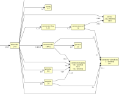
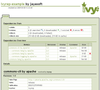
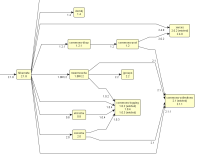
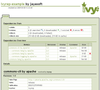

| The agile dependency manager | |||
| Ivy is a popular dependency manager focusing on flexibility and simplicity. Find out more about its unique enterprise features, what people say about it, and how it can improve your build system! | |||
 | |||
| download | documentation & tutorials | demo | share your experience |
News
| Jan 20, 2009 | 2.0.0 version available |
| Nov 04, 2008 | 2.0.0-rc2 version available |
| Sep 26, 2008 | 2.0.0-rc1 version available |
| Jul 11, 2008 | IvyDE 2.0.0.alpha1 version available |
| Mar 04, 2008 | 2.0.0-beta2 version available |
| Dec 13, 2007 | 2.0.0-beta1 version available |
| Oct 11, 2007 | Ivy has graduated as a subproject of Ant! |
| Jul 20, 2007 | 2.0.0-alpha2 version available |
| May 03, 2007 | slides from ApacheCon EU 2007 are available! |
| Apr 26, 2007 | 2.0.0-alpha-1 version available |
| Mar 28, 2007 | TeamCity integrates Ivy for dependent build management |
Ivy is a very powerful dependency manager oriented toward Java dependency management, even though it could be used to manage dependencies of any kind.
If you don't see why you should use a dependency manager at all, or have any question concerning Ivy in general, have a look at the FAQ and at the Mailing lists.
Integrated with Ant
Of course, Ivy is integrated with the most popular build management system for Java projects. But the integration goes way beyond common Ant integration. Indeed Ivy has been designed with Ant integration and design principles in mind. If you have Ant skills, you already have Ivy skills! The plugin mechanism in Ivy follows the same design as Ant, you will find macrodef and files import in Ivy configuration, many things Ant users are already familiar with.
And as Ivy is a sub project of Ant, we even share the same development community!
Simple to use
For simple cases, Ivy is easy to use. Declare your dependencies, and that's all. See the quick start tutorial to check yourself, it should take less than 5 minutes!
Ivy can therefore be used to bring the dependency management feature of maven to Ant build files, for those of you who already use Ant and who do not want to setup a maven project. But Ivy does not stop there, it provides many more great features!
Clean dependency reports
Ivy is able to produce mainly two kind of reports: HTML reports and graph reports. HTML reports gives you a good understanding of what Ivy did, and which dependencies your project depends upon. The graph reports let you have a good overview of the transitive dependencies (see below) and conflicts in your project.
Here are some samples of what Ivy generates for you:
  
 {kind=link}
Non intrusive
Ivy most common use is to resolve dependencies and copy them in the lib dir of your project. Once copied, your build does not depend on Ivy any more. Thus you can easily migrate existing builds using the lib dir pattern to store dependencies. Moreover, you can easily deliver your project with its dependencies so that the build file does not depend on Ivy.
Extremely flexible
With Ivy, you usually do not have to adapt your project to Ivy structure, Ivy will conform to your environment.
Even though Ivy comes with a lots of default values to work out of the box, you can change many things in Ivy. Of course, the dependencies repositories possibilities covers a lot of uses (file system, URL based, repository chaining, ...). But that's not all. You can change the way Ivy finds latest versions of your dependencies, you can change of conflict manager, you can choose if you want Ivy to copy dependencies in your project libs or use them directly from Ivy cache, ...
Easily extensible
When Ivy does not do what you want out of the box, you can often extend it to solve your problem. For instance, you can plug your own repository. But you can also define your own latest strategy and your own conflict manager. See how to extend Ivy in the reference doc.
Moreover you can even define very easily your own metadata on your modules, with extra attributes.
High performances
In Ivy, performances have been taken in consideration from the beginning. It uses a cache to avoid downloading twice a dependency, its strong conflict management system has been thought to avoid downloading a dependency if not necessary, all settings and Ivy files parsing are done using SAX for maximum performance, and so on...
Transitive dependencies
Imagine you have a component that you often reuse in your software development. Imagine that this component has dependencies as well. Then without a good dependency management tool, each time you use this component in your software you have to declare it as a dependency, but also all its dependencies.
With Ivy it's different: you simply write a dependency file once for the component, declaring its own dependencies, then anytime you want to use this component you simply have to declare a dependency on it.
And this is even more powerful if the component your software depends on changes of dependencies during its own development. Then, without Ivy, you have to maintain all your components dependencies declaration each time the dependencies of this component change. With Ivy, you update the Ivy file of the component and that's it !
Strong conflict management
The problem with transitive dependencies is that it's sometimes difficult to know exactly which version of a dependency you get, because several modules are depending on it in different versions. Ivy provides a strong and flexible conflict management engine, which let you easily choose which version should be evicted or kept if its default behavior does not fit your needs.
It is also fully integrated with transitive dependencies management, which means that conflicts are solved for each dependency before being solved for your whole module. This ensures that problematic conflicts will only need to solved in the dependency they are encountered.
Out of the box maven repository support
The public maven repository has many advantages: a lot of modules available, easy search with mvnrepository.com, ... With Ivy, you benefit from this repository out of the box thanks to maven 2 metadata compatibility.
Continuous Integration Ready
Are you working in a continuous integration environment? No? You should ;-)
If you are working in a continuous integration environment, and if you have many projects that depend one on each other, then you are maybe experiencing the dependency management nightmare... Fortunately, Ivy is there to help !
With Ivy you can declare that a component depends on the latest version of another component. Knowing that, Ivy will search for the latest version of the dependency whenever you ask it to do so. This latest version is computed by Ivy either by checking the date of the dependency versions or by comparing versions as text (either lexicographically or with an algorithm close to the one used in php version_compare function).
Publication handling
Ivy handles for you the publication of your projects to your repository, as defined in Ivy. This simplifies a lot the management of multi-project environment.
Pluggable module descriptor parsers
Ivy is able to use Ivy files as module descriptors, but also maven2 POMs, or even your own module descriptors! This can help you move softly from an existing repository of modules to an Ivy managed one.
Unique enterprise features
Ivy is the only dependency management tool to support powerful features such as repository namespace and building through the install task. A tutorial is dedicated to this feature, and show you how you can build your own repository importing data from public one, and converting heterogeneous repositories into a stable and homogeneous one.
Heavily tested
Ivy benefits from a lot of unit tests checked at each code modification. It is also under heavy testing by the community itself, and we pay a lot of attention to bug fixing and code stability.
Free and open source
Ivy is an Apache project, which means that it's fully open sourced, with a business friendly Apache license.
Being open source, you can even modify it for your own needs, and let the community benefit from your enhancements if you like.
Extensively documented
With Ivy, not only the tool is free and open source, but you also have access to a very detailed documentation including tutorials and reference documentation, all for free!
Self contained
The core Ivy engine which allows to perform most of Ivy features is provided as a single jar with no dependency at all, except on JRE 1.4 or greater. This means that you can very easily use Ivy to bootstrap your build system, or embedded in your own tool. Ant support itself is provided only as a thin wrapper over Ivy engine so that you can do everything in embedded or standalone mode
I'd strongly encourage every Java developer to pull [Ivy] down and consider using it to manage dependencies in their Ant builds. As far as I'm concerned, it's a complete no-brainer. Read more
Ivy's a great library... I've just gone through and implemented a multi-module build using Ivy for full transitive dependency management... Read more
Currently, our application uses more than 40 3rdparty jars. [...] With Ivy, I now have a full accounting of what libraries our project relies on directly. [...] We now have clear understanding of our dependency tree. Read more
After spending 10 minutes seeing the demonstrations, Ivy passed the test. [...] In addition, the folks on the Ivy forums were absolutely amazing with support, even when I had problems with my basic configuration file that was completely my fault. Read more
the OpenPortal project which has over 700k lines of code now uses Ivy.
it was a life saver for us.
Congrats on Ivy. It really is an excellent piece of coherent and consistent software. Pretty much everything works as I expected it to, and it supports pretty much everything I've needed.
Apache Ivy is an Apache Incubator project, available under an Apache v2.0 license.
/*
* Apache License
* Version 2.0, January 2004
* http://www.apache.org/licenses/
*
* TERMS AND CONDITIONS FOR USE, REPRODUCTION, AND DISTRIBUTION
*
* 1. Definitions.
*
* "License" shall mean the terms and conditions for use, reproduction,
* and distribution as defined by Sections 1 through 9 of this document.
*
* "Licensor" shall mean the copyright owner or entity authorized by
* the copyright owner that is granting the License.
*
* "Legal Entity" shall mean the union of the acting entity and all
* other entities that control, are controlled by, or are under common
* control with that entity. For the purposes of this definition,
* "control" means (i) the power, direct or indirect, to cause the
* direction or management of such entity, whether by contract or
* otherwise, or (ii) ownership of fifty percent (50%) or more of the
* outstanding shares, or (iii) beneficial ownership of such entity.
*
* "You" (or "Your") shall mean an individual or Legal Entity
* exercising permissions granted by this License.
*
* "Source" form shall mean the preferred form for making modifications,
* including but not limited to software source code, documentation
* source, and configuration files.
*
* "Object" form shall mean any form resulting from mechanical
* transformation or translation of a Source form, including but
* not limited to compiled object code, generated documentation,
* and conversions to other media types.
*
* "Work" shall mean the work of authorship, whether in Source or
* Object form, made available under the License, as indicated by a
* copyright notice that is included in or attached to the work
* (an example is provided in the Appendix below).
*
* "Derivative Works" shall mean any work, whether in Source or Object
* form, that is based on (or derived from) the Work and for which the
* editorial revisions, annotations, elaborations, or other modifications
* represent, as a whole, an original work of authorship. For the purposes
* of this License, Derivative Works shall not include works that remain
* separable from, or merely link (or bind by name) to the interfaces of,
* the Work and Derivative Works thereof.
*
* "Contribution" shall mean any work of authorship, including
* the original version of the Work and any modifications or additions
* to that Work or Derivative Works thereof, that is intentionally
* submitted to Licensor for inclusion in the Work by the copyright owner
* or by an individual or Legal Entity authorized to submit on behalf of
* the copyright owner. For the purposes of this definition, "submitted"
* means any form of electronic, verbal, or written communication sent
* to the Licensor or its representatives, including but not limited to
* communication on electronic mailing lists, source code control systems,
* and issue tracking systems that are managed by, or on behalf of, the
* Licensor for the purpose of discussing and improving the Work, but
* excluding communication that is conspicuously marked or otherwise
* designated in writing by the copyright owner as "Not a Contribution."
*
* "Contributor" shall mean Licensor and any individual or Legal Entity
* on behalf of whom a Contribution has been received by Licensor and
* subsequently incorporated within the Work.
*
* 2. Grant of Copyright License. Subject to the terms and conditions of
* this License, each Contributor hereby grants to You a perpetual,
* worldwide, non-exclusive, no-charge, royalty-free, irrevocable
* copyright license to reproduce, prepare Derivative Works of,
* publicly display, publicly perform, sublicense, and distribute the
* Work and such Derivative Works in Source or Object form.
*
* 3. Grant of Patent License. Subject to the terms and conditions of
* this License, each Contributor hereby grants to You a perpetual,
* worldwide, non-exclusive, no-charge, royalty-free, irrevocable
* (except as stated in this section) patent license to make, have made,
* use, offer to sell, sell, import, and otherwise transfer the Work,
* where such license applies only to those patent claims licensable
* by such Contributor that are necessarily infringed by their
* Contribution(s) alone or by combination of their Contribution(s)
* with the Work to which such Contribution(s) was submitted. If You
* institute patent litigation against any entity (including a
* cross-claim or counterclaim in a lawsuit) alleging that the Work
* or a Contribution incorporated within the Work constitutes direct
* or contributory patent infringement, then any patent licenses
* granted to You under this License for that Work shall terminate
* as of the date such litigation is filed.
*
* 4. Redistribution. You may reproduce and distribute copies of the
* Work or Derivative Works thereof in any medium, with or without
* modifications, and in Source or Object form, provided that You
* meet the following conditions:
*
* (a) You must give any other recipients of the Work or
* Derivative Works a copy of this License; and
*
* (b) You must cause any modified files to carry prominent notices
* stating that You changed the files; and
*
* (c) You must retain, in the Source form of any Derivative Works
* that You distribute, all copyright, patent, trademark, and
* attribution notices from the Source form of the Work,
* excluding those notices that do not pertain to any part of
* the Derivative Works; and
*
* (d) If the Work includes a "NOTICE" text file as part of its
* distribution, then any Derivative Works that You distribute must
* include a readable copy of the attribution notices contained
* within such NOTICE file, excluding those notices that do not
* pertain to any part of the Derivative Works, in at least one
* of the following places: within a NOTICE text file distributed
* as part of the Derivative Works; within the Source form or
* documentation, if provided along with the Derivative Works; or,
* within a display generated by the Derivative Works, if and
* wherever such third-party notices normally appear. The contents
* of the NOTICE file are for informational purposes only and
* do not modify the License. You may add Your own attribution
* notices within Derivative Works that You distribute, alongside
* or as an addendum to the NOTICE text from the Work, provided
* that such additional attribution notices cannot be construed
* as modifying the License.
*
* You may add Your own copyright statement to Your modifications and
* may provide additional or different license terms and conditions
* for use, reproduction, or distribution of Your modifications, or
* for any such Derivative Works as a whole, provided Your use,
* reproduction, and distribution of the Work otherwise complies with
* the conditions stated in this License.
*
* 5. Submission of Contributions. Unless You explicitly state otherwise,
* any Contribution intentionally submitted for inclusion in the Work
* by You to the Licensor shall be under the terms and conditions of
* this License, without any additional terms or conditions.
* Notwithstanding the above, nothing herein shall supersede or modify
* the terms of any separate license agreement you may have executed
* with Licensor regarding such Contributions.
*
* 6. Trademarks. This License does not grant permission to use the trade
* names, trademarks, service marks, or product names of the Licensor,
* except as required for reasonable and customary use in describing the
* origin of the Work and reproducing the content of the NOTICE file.
*
* 7. Disclaimer of Warranty. Unless required by applicable law or
* agreed to in writing, Licensor provides the Work (and each
* Contributor provides its Contributions) on an "AS IS" BASIS,
* WITHOUT WARRANTIES OR CONDITIONS OF ANY KIND, either express or
* implied, including, without limitation, any warranties or conditions
* of TITLE, NON-INFRINGEMENT, MERCHANTABILITY, or FITNESS FOR A
* PARTICULAR PURPOSE. You are solely responsible for determining the
* appropriateness of using or redistributing the Work and assume any
* risks associated with Your exercise of permissions under this License.
*
* 8. Limitation of Liability. In no event and under no legal theory,
* whether in tort (including negligence), contract, or otherwise,
* unless required by applicable law (such as deliberate and grossly
* negligent acts) or agreed to in writing, shall any Contributor be
* liable to You for damages, including any direct, indirect, special,
* incidental, or consequential damages of any character arising as a
* result of this License or out of the use or inability to use the
* Work (including but not limited to damages for loss of goodwill,
* work stoppage, computer failure or malfunction, or any and all
* other commercial damages or losses), even if such Contributor
* has been advised of the possibility of such damages.
*
* 9. Accepting Warranty or Additional Liability. While redistributing
* the Work or Derivative Works thereof, You may choose to offer,
* and charge a fee for, acceptance of support, warranty, indemnity,
* or other liability obligations and/or rights consistent with this
* License. However, in accepting such obligations, You may act only
* on Your own behalf and on Your sole responsibility, not on behalf
* of any other Contributor, and only if You agree to indemnify,
* defend, and hold each Contributor harmless for any liability
* incurred by, or claims asserted against, such Contributor by reason
* of your accepting any such warranty or additional liability.
*
* END OF TERMS AND CONDITIONS
*
* APPENDIX: How to apply the Apache License to your work.
*
* To apply the Apache License to your work, attach the following
* boilerplate notice, with the fields enclosed by brackets "[]"
* replaced with your own identifying information. (Don't include
* the brackets!) The text should be enclosed in the appropriate
* comment syntax for the file format. We also recommend that a
* file or class name and description of purpose be included on the
* same "printed page" as the copyright notice for easier
* identification within third-party archives.
*
* Copyright [yyyy] [name of copyright owner]
*
* Licensed under the Apache License, Version 2.0 (the "License");
* you may not use this file except in compliance with the License.
* You may obtain a copy of the License at
*
* http://www.apache.org/licenses/LICENSE-2.0
*
* Unless required by applicable law or agreed to in writing, software
* distributed under the License is distributed on an "AS IS" BASIS,
* WITHOUT WARRANTIES OR CONDITIONS OF ANY KIND, either express or implied.
* See the License for the specific language governing permissions and
* limitations under the License.
*/
This distribution includes cryptographic software. The country in
which you currently reside may have restrictions on the import,
possession, use, and/or re-export to another country, of
encryption software. BEFORE using any encryption software, please
check your country's laws, regulations and policies concerning the
import, possession, or use, and re-export of encryption software, to
see if this is permitted. See http://www.wassenaar.org/ for more
information.
The U.S. Government Department of Commerce, Bureau of Industry and
Security (BIS), has classified this software as Export Commodity
Control Number (ECCN) 5D002.C.1, which includes information security
software using or performing cryptographic functions with asymmetric
algorithms. The form and manner of this Apache Software Foundation
distribution makes it eligible for export under the License Exception
ENC Technology Software Unrestricted (TSU) exception (see the BIS
Export Administration Regulations, Section 740.13) for both object
code and source code.
The following provides more details on the included cryptographic
software:
For the Ivy ssh resolver requires the JSch
http://www.jcraft.com/jsch/index.html library.
The sftp and https resolvers requires the Java Cryptography extensions
http://java.sun.com/javase/technologies/security/.
The Ivy demo is not available yet. Come back later or contribute a new demo!
What and Why
What is Ivy ?
Ivy is a powerful dependencies manager with transitive dependencies support and much more features.
With Ivy you define the dependencies of your module in an xml file, called an ivy file. Then you usually ask ivy to retrieve your dependencies to a local lib dir, and it does it for you by locating the artifacts of your dependencies in repositories, such as ibiblio.
Why should I use a dependencies manager ?
Without a dependencies manager, two solutions are often used to store the dependencies of a project: a project lib dir or direct access to a shared repository.
The major drawback of the project lib dir is that the same dependencies are stored in multiple location if you have several projects using the same dependencies. Moreover, we often see project where dependencies revisions are not documented, which can cause problems for maintenance.
With the shared repository the problem is often to maintain the list of dependencies of the project. This list is often lost within the build file, which does not help maintenance. Moreover, this solution often requires a download of the whole repository, unless home made dependencies management solution has been used.
Finally, the major drawback of these solutions is that they do not use transitive dependencies. Transitive dependencies are the dependencies of your dependencies. Managing transitive dependencies let you declare dependencies only on what you really need, and not what the module you use themselves need. This not only eases your dependencies declaration, but it also improves a lot the maintenability of your project, especially in multi-project environment. Imagine you develop a component used in several other projects. Then each time your component needs a new dependency, without transitive dependencies, you have to update all the projects using your component ! And this could really take a lot of time !
Why should I use Ivy ?
If you are convinced of using a dependencies manager, you may wonder why using Ivy and not another tool. We are not able to answer this question without being biased, but have a look at Ivy features and the product comparison we provide, and you will certainly see that Ivy is one of the best dependencies manager currently available ;-)
How does Ivy differ from Maven2 ?
The answer to this question is too long, so it deserves its own page here.
Ivy in use
I don't understand what's happening...
The first thing to do when you don't understand what's going wrong is to try to change the message level. If you use ant, you can use the -debug or -verbose options to get more detailed messages and better understand what's happening.
Ivy seems to fail connecting to ibiblio...
First, check if the ibiblio site is ok with your favorite browser. If the site is ok, maybe it's a problem of proxy configuration. Set your ANT_OPTS environment variable
to configure your proxy if you have one.
For instance:
set ANT_OPTS=-Dhttp.proxyHost=myproxy -Dhttp.proxyPort=3128Or for authenticated proxy:
set ANT_OPTS=-Dhttp.proxyHost=myproxyhost -Dhttp.proxyPort=8080 -Dhttp.proxyUserName=myproxyusername -Dhttp.proxyPassword=myproxypassword -Dhttps.proxyHost=myproxyhost -Dhttps.proxyPort=8080
If it still doesn't work, maybe it's your dependency file which is not ok. Check
if the module name you depend on is actually a name of directory under
www.ibiblio.org/maven/. If this is the case, check if the jar with a name like
[module]-[revision].jar is present under the jars directory of this module on ibiblio.
For instance: www.ibiblio.org/maven/commons-httpclient/jars/commons-httpclient-2.0.jar
If this is the case, check your ivy configuration to see if you actually use the ibiblio
or ivyrep resolver.
Finally, you can check if the files were not downloaded but corrupted
(Ivy has no md5 checking for the moment) by checking your lib directory and opening
the jars if any with an unzip program.
If you still have problems post on the Mailing lists
mentioning your OS, your version of ant, your version of ivy, your configuration file
and your ivy file.
Ivy fails to get an artifact / ivy file on my http server. What's wrong?
The first thing to do is to ensure the setting is correct. Ivy should log the url it tried, copy this url and paste it in your favorite browser, and verify you get no error.
If this is ok, check if you don't need any proxy setting nor authentication. For proxy setting, you can use for instance this:
set ANT_OPTS=-Dhttp.proxyHost=myproxy -Dhttp.proxyPort=3128
Or for authenticated proxy:
set ANT_OPTS=-Dhttp.proxyHost=myproxyhost -Dhttp.proxyPort=8080 -Dhttp.proxyUserName=myproxyusername -Dhttp.proxyPassword=myproxypassword -Dhttps.proxyHost=myproxyhost -Dhttps.proxyPort=8080For http authentication, fill in the appropriate data at configuration time.
If you still have no idea of what is wrong, then I suggest to use commons-httpclient if it isn't already the case (you should just put commons-httpclient in you classpath), and then turn on the debug logging.
You will then have very detailed information on how your url is handled. If you still have problem, ask for help on the Mailing lists.
What if I do not want to put my library files in the lib directory ?
No problem, you just have to set an ant property:
<property name="ivy.lib.dir" value="pathtomylibdir"/>
What if I do not want the revision of the files I retrieve to appear in the file name ?
A typical question for people using an IDE like eclipse and often changing
dependency revision: it's a bit boring to change your IDE project just to tell
him to use comp-build2596.jar instead of comp-build2595.jar, when you have
already changed your ivy file (and even if you haven't changed it, if you use
the continuous integration feature !). No problem, you have a total control on
the files retrieved using the pattern attribute in the retrieve task:
Here is the default pattern:
<ivy:retrieve pattern="${ivy.lib.dir}/[artifact]-[revision].[ext]"/>
And here is one which do not suffix file name with dependency revision:
<ivy:retrieve pattern="${ivy.lib.dir}/[artifact].[ext]"/>
And one which makes your lib directory have the same layout as the ibiblio repository:
<ivy:retrieve pattern="${ivy.lib.dir}/[module]/[type]s/[artifact]-[revision].[ext]"/>
Not too difficult, and really flexible, isn't it ? And check the retrieve task
reference documentation to learn more about it...
Why two xml files ?
Ivy uses two types of xml files: configuration files and ivy files.
In fact, Ivy distinguishes two different steps to describe and get your
dependencies:
You write ivy files to describe the dependencies of your module, independently of how you retrieve them.
Then you configure ivy to indicate where it can find your dependencies. Thus you can easily share your ivy files, even if you have internal dependencies which are not resolved the same way in your environment as in the target development environment. You just need to write two configuration files, one in your default development environment, and one in the target development environment with the same ivy files.
How do I separate the dependencies I need at xxx time and the one I need at yyy time ?
Ivy uses a concept called configurations to handle this, and many more. As explained in the terminology page, a configuration of your module can be thought as a way to use your module (note: this has nothing to do with the configuration of ivy itself, through the use of configuration file). You can describe what dependencies are needed in each configuration.
Moreover, because the dependencies are modules too, they can also have configurations. What is extremely powerful with ivy is that you can define configurations mapping, i.e. which conf of the dependency is needed in which conf of your module. Thus what is needed at 'runtime' of a dependency can be needed for 'test' of your module.
Finally, the configurations are unlimited, defined in each module, and can extend each other. This contributes a lot to ivy flexibility.
Can I write an ivy file for a module with no artifact at all ?
Yes, this is what is called a 'virtual' module.
Having a module which has no publication and only dependencies can be useful in many cases.
In particular, you can in this way define a set of dependencies used in several projects. Once defined, you can simply add a dependency on this virtual module to get all its dependencies, thanks to transitive dependencies management.
It can also be useful if you want to define a flexible framework. In your framework, you will certainly have several modules, each having its own dependencies. But for the users of your framework, it can be interesting to provide a virtual module, representing the framework as a whole, and using configurations to let the user choose what he really wants to use in your framework, in a very flexible and effective way.
But the problem is that ivy considers by default that a module publishes one artifact, with the same name as the module itself. So the way to define a virtual module is to add to its ivy file a publications section with no publication inside:
<publications/>
I do not manage to get xxx module on ibiblio. What's wrong ?
The problem can come from several places... usually it comes from the fact that some modules on ibiblio do not respect a clean structure.
For instance, opensymphony projects are all in an opensymphony directory, which does not respect the [module]/[artifact]-[revision].[ext] pattern. In this case the only way to go with this is to configure another resolver with the appropriate pattern, and configure ivy to use this resolver for opensymphony only.
Another similar problem is to have several modules in one directory, such xerces and xmlapis in the xerces directory. The problem is that if you consider the two as one module, you will be tempted to declare a dependency on two revisions of this module. This is not the right approach, because this does not match ivy definition of a module. A better approach is similar to the preceding one with a special configuration for this only.
Another solution is to setup a local repository for those modules that are not cleanly deployed on ibiblio. Using this local repository first and the ibiblio repository after is a good way to turn around the problems of ibiblio and still benefit from the huge number of artifacts that can be found.
When I update an ivy file in my repository ivy do not take the change into account. Is this normal ?
This the default behaviour of ivy, which relies on the revision and on its cache to avoid too many downloads. However, this can be changed on each resolver using the checkmodified attribute, or globally by setting ivy.resolver.default.check.modified variable to true.
Misc
Where are the release notes ?
Release notes can be found in the documentation.
Where can I get more information?
If you need more information about Ivy than the one found in the documentation, you can see the links page, use the Mailing lists to ask your question to the community, or use your favorite search engine.
For search engine search, we advise to use ivy + ant or java as base keywords, since ivy alone is a very common word.
We are frequently asked how ivy compares to maven2, so we have decided togives some insight about our opinion on the subject.
Obviously this comparison is biased (hey, you are on official Ivy site :-)), but we'll try to keep it as fair as possible. Do not hesitate to add comment if you feel something is missing or false on this page. You can also have a look at Maven2 feature comparison page on codehaus, which itself offers another point of view.
There have been also several discussions on the subject, among which the one triggered by spring contemplating about switching to maven is may be the more interesting.
But here is the points we think mainly differentiate maven2 and Ivy.
Comparing plants and apples
First, the most important difference between maven2 and ivy is that they aren't at all the same kind of tools. Maven2 is a software project management and comprehension tool, whereas Ivy is only a dependency management tool, highly integrated with Ant, the popular build management tool. So maybe a more interesting comparison would compare Ant+Ivy vs Maven 2. But this goes beyond the scope of this page which concentrates on dependency management only.Different concepts
Ivy heavily relies on a unique concept called configuration. In ivy, a module configuration is a way to use or to see the module. For instance, you can have a test and runtime configuration in your module. But you can also have a mysql and an oracle configuration. Or an hibernate and a jdbc configuration. In each configuration you can declare what artifacts (jar, war, ...) are required. And in each configuration, you can declare your dependencies on other modules, and describe which configuration of the dependency you need. This is called configuration mapping, and it is a very flexible way to answer to a lot of problems we face very often in software development.Maven2 on its side has something called the scope. You can declare a dependency as being part of the test scope, or the buildtime scope. Then depending on this scope you will get the dependency artifact (only one artifact per module in maven2) with its dependencies depending on their scope. Scopes are predefined in maven2 and you can't change that. No way to create an oracle scope. No way to indicate you need what has been declared to be needed in the runtime scope of your dependency in your compile one. Everything here is written in the marble.
And this leads to some kind of troubles... as Matt Raible stated in his blog talking about maven2 dependencies:
There are a *lot* of unnecessary dependencies downloaded for many libraries. For example, Hibernate downloads a bunch of JBoss JARs and the Display Tag downloads all the various web framework JARs. I found myself excluding almost as many dependencies as I added.The problem is that hibernate can be used with several cache implementations, several connection pool implementation, ... And this can't be managed with scopes, wheres Ivy configurations offers an elegant solution to this kind of problem. For instance, in ivy, assuming hibernate as an ivy file like this one, then you can declare a dependency like that:
<dependency org="hibernate" name="hibernate" rev="2.1.8" conf="default->proxool,oscache"/>to get hibernate with its proxool and oscache implemetations, and like that:
<dependency org="hibernate" name="hibernate" rev="2.1.8" conf="default->dbcp,swarmcache"/>to get hibernate with dbcp and swarmcache.
Documentation
An important thing to be able to use a tool is its amount of documentation. With Ivy, even if they are written in broken english (would you have preferred well written french :-)), the reference documentation is extensive and covers all the features including many examples. We also provide some official tutorials which are maintained with the new versions of Ivy. And since we consider documentation so important, we also provide online versions of documentation per Ivy version since Ivy 2.0.0-alpha2.With maven2, it's a bit difficult to clearly know what can be considered as dependency management documentation, but we didn't managed to find much: some small introductory guides, short entries in the pom reference guide, and not really much more. Even in the maven book you can get for free on mergere website, the insight about dependency management is still light in our point of view.
Conflict management
Conflict management are an important part of dependency management, cause when dealing with transitive dependencies you often have to face conflicts. In this area, Ivy let you do whatever you want: use one conflict manager in one module, another one elsewhere, decide which revision you will get, ... You can even plug your own conflict manager if you need to.With maven2, conflict management is quite simple: the principle is to get the nearest definition. So if your module depends on foo 1.0, none of your dependencies will ever manage to get foo 1.1 without a change in your own dependency declaration. It may be ok in some cases, it may not in others...
Flexibility
In Ivy many things can be configured, and many others can be plugged in: dependency resolvers, conflict manager, module descriptor parser, latest revision strategy, ...Maven2 also offers repository pluggability, but not much more as far as we know. Moreover, repository configuration is much less flexible than with Ivy: no repository chaining, no way to split metadata and artifacts in multiple repositories, ...
Public Repositories
Maven2 comes out of the box configured to use maven2 repository, which contains a lot of modules (both artifacts and module descriptors). The only problem some may face is that module descriptors are not always checked, so some are not really well written.Ivy being compatible with maven 2 metadata, the default public repository used is also the maven 2 repository, which is fine for a good out of the box experience.
However, we don't recommend to use such a public repository for an enterprise build system, and as such Ivy provides features and documentation to build your own enterprise repository based (or not) on data available in the public repository.
Repositories
- IvyRep
- IvyRep Sandbox
- IBiblio maven repository
- Webwork ivy repository
- Kokala repository
- Java.net Maven repository
- mvnrepository
The main repository of ivy files used by Ivy.
This subversion repository is used to share ivy files before promoting them to ivyrep.
The official repository of maven hosts a great number of jars. It can be used by ivy to find the jars of your depedencies.
Open symphony has created an ivy repository you can use as a model or directly.
Folks from FreeCast have created an ivy repository for building FreeCast. You will find many interesting ivy files over here.
Java.net has a maven repository with interesting stuff that can't be found on ibiblio
Search Maven Ibiblio repository
Tools and plugins
Here is a list of the ivy related tools and plugins we are aware of that can be found over the net.
Feel free to post on the mailing list to ask for your tool to be added here.
- ivytools.org
- IvyDE
- IvyBeans
- IvyIDEA
- IvyDependencyImportor
- Ivy Plugin
- IvyCruise
- ivy-svn
- SAnt
- Generate application.xml from ivy.xml for packaging an ear
- EAR ant task
This sourceforge project aims to gather community contributed tools and plugins for ivy.
A plugin for eclipse which helps writing ivy files by bringing powerful code completion and wizards, and also let you add a classpath container keeping your eclipse project classpath in sync with the dependencies ivy resolves.
A plugin for NetBeans which provide full Apache Ivy integration into the library management feature of the Netbeans IDE.
An Intellij IDEA plugin for resolving dependencies using apache ivy and adding them in IntelliJ.
Another plugin for intellij IDEA, which let you import all the libs described in the ivy.xml to the current module library.
Another plugin for intellij IDEA, which reads IDEA module settings such as classpath and source directories from IVY setup.
This set of plugins for cruise control let you integrate ivy with this famous continuous integration server.
This is a subversion dependency resolver for Ivy 2.0.
SAnt (Shared Ant) is an experimental build system based on Ant and Ivy, primarily developpedd as part of the hippo project.
is an entry on Philipp Meier's weblog which explain how he used ivy and xslt to generate his application.xml files.
this is not directly related to ivy, but more to the link above. You have also the possibility to use this task to generate your ear, which does not depend on Ivy, but which can be very easily integrated with.
Doc, tutorials, articles
- ApacheCon EU 2007 slides
- Netbeans FAQ
- Using Ivy in a dotnet project
- Integrating Ivy and luntbuild
- Easing multi module development
- Remove the smell from your build scripts
slides and demo sources from Xavier's ApacheCon EU 2007 talk
The Netbeans FAQ has an entry explaining how to use Ivy in their open source IDE.
Chris gives a good idea of how to use ivy, cruise control and nant in a dotnet project environment
Davor Cengija on his blog explain how he integrates Ivy in luntbuild, an open source continuous integration server
Johan stuyts, the author of SAnt, also contributed a nice article on his view of how to use Ivy on a multi module environment.
This article is not related to Ivy, but to build script in general, but we thought it may be worth for Ivy users to read it.
Others
- ant
- AntContrib
- Javalobby
Ant is the popular build tool with which ivy is integrated.
AntContrib is a project offering a set of useful tasks for ant.
Javalobby is a Java community site with interesting forums and tutorials